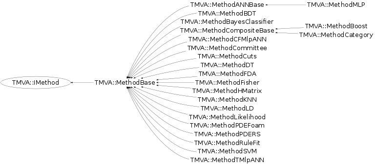

Function Members (Methods)
This is an abstract class, constructors will not be documented.
Look at the header to check for available constructors.
public:
| virtual | ~IMethod() |
| static TClass* | Class() |
| virtual const TMVA::Ranking* | CreateRanking() |
| virtual void | DeclareOptions() |
| virtual Double_t | GetMvaValue(Double_t* err = 0, Double_t* errUpper = 0) |
| virtual const char* | GetName() const |
| virtual Bool_t | HasAnalysisType(TMVA::Types::EAnalysisType type, UInt_t numberClasses, UInt_t numberTargets) |
| virtual void | Init() |
| virtual TClass* | IsA() const |
| virtual void | MakeClass(const TString& classFileName = TString("")) const |
| virtual Bool_t | MonitorBoost(TMVA::MethodBoost* boost) |
| TMVA::IMethod& | operator=(const TMVA::IMethod&) |
| virtual void | PrintHelpMessage() const |
| virtual void | ProcessOptions() |
| virtual void | ReadWeightsFromStream(istream&) |
| virtual void | ShowMembers(TMemberInspector& insp) |
| virtual void | Streamer(TBuffer& b) |
| void | StreamerNVirtual(TBuffer& b) |
| virtual void | Train() |
| virtual void | WriteMonitoringHistosToFile() const |
protected:
| virtual void | GetHelpMessage() const |
| virtual void | MakeClassSpecific(ostream&, const TString&) const |
Class Charts
{kind=link}
{kind=link}
{kind=link}
{kind=link}

Function documentation
const char * GetName() const
------- virtual member functions to be implemented by each MVA method the name of the method
Double_t GetMvaValue(Double_t* err = 0, Double_t* errUpper = 0)
calculate the MVA value - some methods may return a per-event error estimate (unless: *err = -1)
void MakeClass(const TString& classFileName = TString("")) const
make ROOT-independent C++ class for classifier response
Bool_t MonitorBoost(TMVA::MethodBoost* boost)
perfrom extra actions during the boosting at different stages
void Init()
void DeclareOptions()
void ProcessOptions()
void MakeClassSpecific(ostream& , const TString& ) const
make ROOT-independent C++ class for classifier response (classifier-specific implementation)